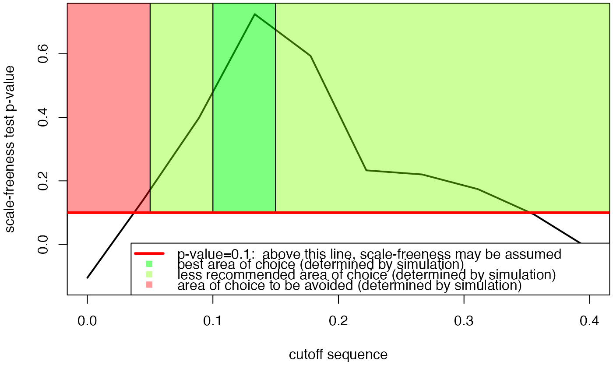

Allows estimating the best cutoff. For a sequence of cutoff, the p value corresponding to each cutoff value of the sequence. Mainly recommended for single time cascade networks. To achieve more sparsity in other settings, please use a fiiting function based on the stability selection or selectboost algorithms.
Value
A list containing two objects :
- p.value
the p values corresponding to the sequence of cutoff
- p.value.inter
the smoothed p value vector, using the loess function
Examples
# \donttest{
data(network)
cutoff(network)
#> [1] "This computation may be long"
#> [1] "1/10"
#> [1] "2/10"
#> [1] "3/10"
#> [1] "4/10"
#> [1] "5/10"
#> [1] "6/10"
#> [1] "7/10"
#> [1] "8/10"
#> [1] "9/10"
#> [1] "10/10"
#> [1] 0.000 0.000 0.081 0.974 0.585 0.045 0.377 0.172 0.049 0.006

#> $p.value
#> [1] 0.000 0.000 0.081 0.974 0.585 0.045 0.377 0.172 0.049 0.006
#>
#> $p.value.inter
#> [1] -0.10507152 0.13978653 0.39801072 0.72456545 0.59335316 0.23310072
#> [7] 0.22014627 0.17394550 0.09493869 -0.01411841
#>
#> $sequence
#> [1] 0.00000000 0.04444444 0.08888889 0.13333333 0.17777778 0.22222222
#> [7] 0.26666667 0.31111111 0.35555556 0.40000000
#>
#See vignette for more details
# }